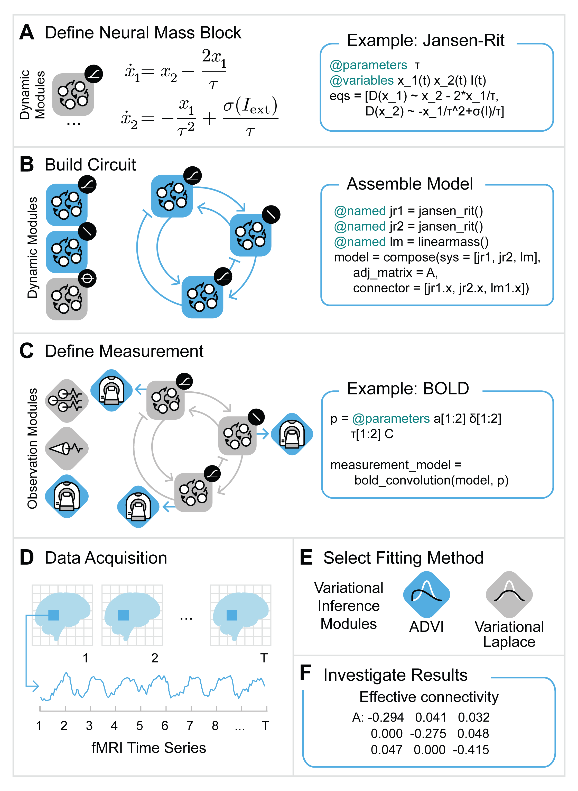

Solving Inverse Problems with Spectral Dynamic Causal Modeling
Introduction
Neuroblox provides you with a comprehensive environment for simulations as we have explored previously, but its functionality doesn't stop there. We will now pivot and turn our attention to a different kind of problem: inferring model parameters, that is solving inverse problems, from time series. The method of choice is one of the most widely spread in imaging neuroscience, spectral Dynamic Causal Modeling (spDCM)[1,2]. In this tutorial we will introduce how to perform a spDCM analysis on simulated data. To do so we roughly reproduce the procedure in the SPM script DEM_demo_induced_fMRI.m in Neuroblox. This work was also presented in Hofmann et al.[2]
In this tutorial we will define a circuit of three linear neuronal mass models, all driven by an Ornstein-Uhlenbeck process. We will model fMRI data by a balloon model and BOLD signal on top. After simulation of this simple model we will use spectral Dynamic Causal Modeling to infer some of the model parameters from the simulation time series.

A brief outline of the procedure we will pursue:
- define the graph, add blocks -> section A, B and C in the figure
- simulate the model -> instead we could also use actual data, section D in figure
- compute the cross spectral density
- setup the DCM
- estimate parameters
- plot the results
using Neuroblox
using LinearAlgebra
using StochasticDiffEq
using DataFrames
using OrderedCollections
using CairoMakie
using ModelingToolkit
using RandomModel simulation
Define the model
We will define a model of 3 regions. This means first of all to define a graph. To this graph we will add three linear neuronal mass models which constitute the (hidden) neuronal dynamics. These constitute three nodes of the graph. Next we will also need some input that stimulates the activity, we use simple Ornstein-Uhlenbeck blocks to create stochastic inputs. One per region. We want to simulate fMRI signals thus we will need to also add a BalloonModel per region. Note that the Ornstein-Uhlenbeck block will feed into the linear neural mass which in turn will feed into the BalloonModel blox. This needs to be represented by the way we define the edges.
Random.seed!(17) # set seed for reproducibility
nr = 3 # number of regions
g = MetaDiGraph()
regions = []; # list of neural mass blocks to then connect them to each other with an adjacency matrix `A_true`Now add the different blocks to each region and connect the blocks within each region. For convenience we use a for loop since the type of blocks belonging to a each region repeat over regions but you could also approach building the system the same way as was shown in previous tutorials:
for i = 1:nr
region = LinearNeuralMass(;name=Symbol("r$(i)₊lm"))
push!(regions, region) # store neural mass model in list. We need this list below. If you haven't seen the Julia command `push!` before [see here](http://jlhub.com/julia/manual/en/function/push-exclamation).
# add Ornstein-Uhlenbeck block as noisy input to the current region
input = OUBlox(;name=Symbol("r$(i)₊ou"), σ=0.1)
add_edge!(g, input => region, weight=1/16) # Note that 1/16 is taken from SPM12, this stabilizes the balloon model simulation. Alternatively the noise of the Ornstein-Uhlenbeck block or the weight of the edge connecting neuronal activity and balloon model could be reduced to guarantee numerical stability.
# simulate fMRI signal with BalloonModel which includes the BOLD signal on top of the balloon model dynamics
measurement = BalloonModel(;name=Symbol("r$(i)₊bm"))
add_edge!(g, region => measurement, weight=1.0)
endNext we define the between-region connectivity matrix and connect regions; we use the same matrix as is defined in [3]
A_true = [[-0.5 -2 0]; [0.4 -0.5 -0.3]; [0 0.2 -0.5]]
for idx in CartesianIndices(A_true)
add_edge!(g, regions[idx[1]] => regions[idx[2]], weight=A_true[idx[1], idx[2]])
endfinally we compose the simulation model
@named simmodel = system_from_graph(g, split=false)\[ \begin{align} \frac{\mathrm{d} \mathtt{r1.ou.x}\left( t \right)}{\mathrm{d}t} &= \frac{\mathtt{r1.ou.\mu} - \mathtt{r1.ou.x}\left( t \right)}{\mathtt{r1.ou.\tau}} \\ \frac{\mathrm{d} \mathtt{r1.lm.x}\left( t \right)}{\mathrm{d}t} &= \mathtt{w\_r1.lm\_r1.lm} \mathtt{r1.lm.x}\left( t \right) + \mathtt{w\_r1.ou\_r1.lm} \mathtt{r1.ou.x}\left( t \right) + \mathtt{w\_r2.lm\_r1.lm} \mathtt{r2.lm.x}\left( t \right) + \mathtt{w\_r3.lm\_r1.lm} \mathtt{r3.lm.x}\left( t \right) \\ \frac{\mathrm{d} \mathtt{r1.bm.s}\left( t \right)}{\mathrm{d}t} &= - 0.32 \left( -1 + e^{\mathtt{r1.bm.lnu}\left( t \right)} \right) + \mathtt{w\_r1.lm\_r1.bm} \mathtt{r1.lm.x}\left( t \right) - 0.64 \mathtt{r1.bm.s}\left( t \right) e^{\mathtt{r1.bm.ln\kappa}} \\ \frac{\mathrm{d} \mathtt{r1.bm.lnu}\left( t \right)}{\mathrm{d}t} &= \frac{\mathtt{r1.bm.s}\left( t \right)}{e^{\mathtt{r1.bm.lnu}\left( t \right)}} \\ \frac{\mathrm{d} \mathtt{r1.bm.ln\nu}\left( t \right)}{\mathrm{d}t} &= \frac{e^{\mathtt{r1.bm.lnu}\left( t \right)} - \left( e^{\mathtt{r1.bm.ln\nu}\left( t \right)} \right)^{3.125}}{2 e^{\mathtt{r1.bm.ln\tau}} e^{\mathtt{r1.bm.ln\nu}\left( t \right)}} \\ \frac{\mathrm{d} \mathtt{r1.bm.lnq}\left( t \right)}{\mathrm{d}t} &= \frac{\frac{2.5 e^{\mathtt{r1.bm.lnu}\left( t \right)} \left( 1 - 0.6^{\frac{1}{e^{\mathtt{r1.bm.lnu}\left( t \right)}}} \right)}{e^{\mathtt{r1.bm.lnq}\left( t \right)}} - \left( e^{\mathtt{r1.bm.ln\nu}\left( t \right)} \right)^{2.125}}{2 e^{\mathtt{r1.bm.ln\tau}}} \\ \frac{\mathrm{d} \mathtt{r2.ou.x}\left( t \right)}{\mathrm{d}t} &= \frac{\mathtt{r2.ou.\mu} - \mathtt{r2.ou.x}\left( t \right)}{\mathtt{r2.ou.\tau}} \\ \frac{\mathrm{d} \mathtt{r2.lm.x}\left( t \right)}{\mathrm{d}t} &= \mathtt{w\_r1.lm\_r2.lm} \mathtt{r1.lm.x}\left( t \right) + \mathtt{w\_r2.lm\_r2.lm} \mathtt{r2.lm.x}\left( t \right) + \mathtt{w\_r2.ou\_r2.lm} \mathtt{r2.ou.x}\left( t \right) + \mathtt{w\_r3.lm\_r2.lm} \mathtt{r3.lm.x}\left( t \right) \\ \frac{\mathrm{d} \mathtt{r2.bm.s}\left( t \right)}{\mathrm{d}t} &= - 0.32 \left( -1 + e^{\mathtt{r2.bm.lnu}\left( t \right)} \right) + \mathtt{w\_r2.lm\_r2.bm} \mathtt{r2.lm.x}\left( t \right) - 0.64 \mathtt{r2.bm.s}\left( t \right) e^{\mathtt{r2.bm.ln\kappa}} \\ \frac{\mathrm{d} \mathtt{r2.bm.lnu}\left( t \right)}{\mathrm{d}t} &= \frac{\mathtt{r2.bm.s}\left( t \right)}{e^{\mathtt{r2.bm.lnu}\left( t \right)}} \\ \frac{\mathrm{d} \mathtt{r2.bm.ln\nu}\left( t \right)}{\mathrm{d}t} &= \frac{e^{\mathtt{r2.bm.lnu}\left( t \right)} - \left( e^{\mathtt{r2.bm.ln\nu}\left( t \right)} \right)^{3.125}}{2 e^{\mathtt{r2.bm.ln\nu}\left( t \right)} e^{\mathtt{r2.bm.ln\tau}}} \\ \frac{\mathrm{d} \mathtt{r2.bm.lnq}\left( t \right)}{\mathrm{d}t} &= \frac{\frac{2.5 \left( 1 - 0.6^{\frac{1}{e^{\mathtt{r2.bm.lnu}\left( t \right)}}} \right) e^{\mathtt{r2.bm.lnu}\left( t \right)}}{e^{\mathtt{r2.bm.lnq}\left( t \right)}} - \left( e^{\mathtt{r2.bm.ln\nu}\left( t \right)} \right)^{2.125}}{2 e^{\mathtt{r2.bm.ln\tau}}} \\ \frac{\mathrm{d} \mathtt{r3.ou.x}\left( t \right)}{\mathrm{d}t} &= \frac{\mathtt{r3.ou.\mu} - \mathtt{r3.ou.x}\left( t \right)}{\mathtt{r3.ou.\tau}} \\ \frac{\mathrm{d} \mathtt{r3.lm.x}\left( t \right)}{\mathrm{d}t} &= \mathtt{w\_r1.lm\_r3.lm} \mathtt{r1.lm.x}\left( t \right) + \mathtt{w\_r2.lm\_r3.lm} \mathtt{r2.lm.x}\left( t \right) + \mathtt{w\_r3.lm\_r3.lm} \mathtt{r3.lm.x}\left( t \right) + \mathtt{w\_r3.ou\_r3.lm} \mathtt{r3.ou.x}\left( t \right) \\ \frac{\mathrm{d} \mathtt{r3.bm.s}\left( t \right)}{\mathrm{d}t} &= - 0.32 \left( -1 + e^{\mathtt{r3.bm.lnu}\left( t \right)} \right) + \mathtt{w\_r3.lm\_r3.bm} \mathtt{r3.lm.x}\left( t \right) - 0.64 e^{\mathtt{r3.bm.ln\kappa}} \mathtt{r3.bm.s}\left( t \right) \\ \frac{\mathrm{d} \mathtt{r3.bm.lnu}\left( t \right)}{\mathrm{d}t} &= \frac{\mathtt{r3.bm.s}\left( t \right)}{e^{\mathtt{r3.bm.lnu}\left( t \right)}} \\ \frac{\mathrm{d} \mathtt{r3.bm.ln\nu}\left( t \right)}{\mathrm{d}t} &= \frac{e^{\mathtt{r3.bm.lnu}\left( t \right)} - \left( e^{\mathtt{r3.bm.ln\nu}\left( t \right)} \right)^{3.125}}{2 e^{\mathtt{r3.bm.ln\nu}\left( t \right)} e^{\mathtt{r3.bm.ln\tau}}} \\ \frac{\mathrm{d} \mathtt{r3.bm.lnq}\left( t \right)}{\mathrm{d}t} &= \frac{\frac{2.5 \left( 1 - 0.6^{\frac{1}{e^{\mathtt{r3.bm.lnu}\left( t \right)}}} \right) e^{\mathtt{r3.bm.lnu}\left( t \right)}}{e^{\mathtt{r3.bm.lnq}\left( t \right)}} - \left( e^{\mathtt{r3.bm.ln\nu}\left( t \right)} \right)^{2.125}}{2 e^{\mathtt{r3.bm.ln\tau}}} \\ 0 &= - \mathtt{r1.bm.bold}\left( t \right) + 4 \left( 3.7726 + \frac{ - 0.4 e^{\mathtt{r1.bm.ln\epsilon}} e^{\mathtt{r1.bm.lnq}\left( t \right)}}{e^{\mathtt{r1.bm.ln\nu}\left( t \right)}} - 0.6 e^{\mathtt{r1.bm.ln\epsilon}} - 2.7726 e^{\mathtt{r1.bm.lnq}\left( t \right)} + \left( -1 + e^{\mathtt{r1.bm.ln\epsilon}} \right) e^{\mathtt{r1.bm.ln\nu}\left( t \right)} \right) \\ 0 &= - \mathtt{r2.bm.bold}\left( t \right) + 4 \left( 3.7726 - 0.6 e^{\mathtt{r2.bm.ln\epsilon}} - 2.7726 e^{\mathtt{r2.bm.lnq}\left( t \right)} + \frac{ - 0.4 e^{\mathtt{r2.bm.ln\epsilon}} e^{\mathtt{r2.bm.lnq}\left( t \right)}}{e^{\mathtt{r2.bm.ln\nu}\left( t \right)}} + \left( -1 + e^{\mathtt{r2.bm.ln\epsilon}} \right) e^{\mathtt{r2.bm.ln\nu}\left( t \right)} \right) \\ 0 &= - \mathtt{r3.bm.bold}\left( t \right) + 4 \left( 3.7726 - 0.6 e^{\mathtt{r3.bm.ln\epsilon}} - 2.7726 e^{\mathtt{r3.bm.lnq}\left( t \right)} + \frac{ - 0.4 e^{\mathtt{r3.bm.ln\epsilon}} e^{\mathtt{r3.bm.lnq}\left( t \right)}}{e^{\mathtt{r3.bm.ln\nu}\left( t \right)}} + e^{\mathtt{r3.bm.ln\nu}\left( t \right)} \left( -1 + e^{\mathtt{r3.bm.ln\epsilon}} \right) \right) \end{align} \]
Run the simulation and plot the results
setup simulation of the model, time in seconds
tspan = (0.0, 512.0)
prob = SDEProblem(simmodel, [], tspan)
dt = 2 # 2 seconds (units are milliseconds) as measurement interval for fMRI
sol = solve(prob, ImplicitRKMil(), saveat=dt);we now want to extract all the variables in our model which carry the tag "measurement". For this purpose we can use the Neuroblox function get_idx_tagged_vars the observable quantity in our model is the BOLD signal, the variable of the Blox BalloonModel that represents the BOLD signal is tagged with "measurement" tag. other tags that are defined are "input" which denotes variables representing a stimulus, like for instance an OUBlox.
idx_m = get_idx_tagged_vars(simmodel, "measurement") # get index of bold signal3-element Vector{Int64}:
19
20
21plot bold signal time series
f = Figure()
ax = Axis(f[1, 1],
title = "fMRI time series",
xlabel = "Time [ms]",
ylabel = "BOLD",
)
lines!(ax, sol, idxs=idx_m)
fWe note that the initial spike is not meaningful and a result of the equilibration of the stochastic process thus we remove it.
dfsol = DataFrame(sol[ceil(Int, 101/dt):end]);Estimate and plot the cross-spectral densities
data = Matrix(dfsol[:, idx_m]);We compute the cross-spectral density by fitting a linear model of order p and then compute the csd analytically from the parameters of the multivariate autoregressive model
p = 8
mar = mar_ml(data, p) # maximum likelihood estimation of the MAR coefficients and noise covariance matrix
ns = size(data, 1)
freq = range(min(128, ns*dt)^-1, max(8, 2*dt)^-1, 32)
csd = mar2csd(mar, freq, dt^-1);Now plot the cross-spectrum:
fig = Figure(size=(1200, 800))
grid = fig[1, 1] = GridLayout()
for i = 1:nr
for j = 1:nr
ax = Axis(grid[i, j])
lines!(ax, freq, real.(csd[:, i, j]))
end
end
figModel Inference
We will now assemble a new model that is used for fitting the previous simulations. This procedure is similar to before with the difference that we will define global parameters and use tags such as [tunable=false/true] to define which parameters we will want to estimate. Note that parameters are tunable by default.
g = MetaDiGraph()
regions = []; # list of neural mass blocks to then connect them to each other with an adjacency matrix `A`Note that parameters are typically defined within a Blox and thus not immediately visible to the user. Since we want some parameters to be shared across several regions we define them outside of the regions. For this purpose use the ModelingToolkit macro @parameters which is used to define symbolic parameters for models. Note that we can set the tunable flag right away thereby defining whether we will include this parameter in the optimization procedure or rather keep it fixed to its predefined value.
@parameters lnκ=0.0 [tunable=false] lnϵ=0.0 [tunable=false] lnτ=0.0 [tunable=false] # lnκ: decay parameter for hemodynamics; lnϵ: ratio of intra- to extra-vascular components, lnτ: transit time scale
@parameters C=1/16 [tunable=false] # note that C=1/16 is taken from SPM12 and stabilizes the balloon model simulation. See also comment above.\[ \begin{equation} \left[ \begin{array}{c} C \\ \end{array} \right] \end{equation} \]
We now define a similar model as above for the simulation but instead of using an actual stimulus Blox we here add ExternalInput which represents a simple linear external input that is not specified any further. We simply say that our model gets some input with a proportional factor $C$. This is mostly only to make sure that our results are consistent with those produced by SPM
for i = 1:nr
region = LinearNeuralMass(;name=Symbol("r$(i)₊lm"))
push!(regions, region)
input = ExternalInput(;name=Symbol("r$(i)₊ei"))
add_edge!(g, input => region, weight=C)
# we assume fMRI signal and model them with a BalloonModel
measurement = BalloonModel(;name=Symbol("r$(i)₊bm"), lnτ=lnτ, lnκ=lnκ, lnϵ=lnϵ)
add_edge!(g, region => measurement, weight=1.0)
endHere we define the prior expectation values of the effective connectivity matrix we wish to infer:
A_prior = 0.01*randn(nr, nr)
A_prior -= diagm(diag(A_prior)) # remove the diagonal3×3 Matrix{Float64}:
0.0 0.00345049 -0.0122152
0.0148102 0.0 0.00437472
-0.00716553 0.00429191 0.0Since we want to optimize these weights we turn them into symbolic parameters: Add the symbolic weights to the edges and connect regions.
A = []
for (i, a) in enumerate(vec(A_prior))
symb = Symbol("A$(i)")
push!(A, only(@parameters $symb = a))
end
for (i, idx) in enumerate(CartesianIndices(A_prior))
if idx[1] == idx[2]
add_edge!(g, regions[idx[1]] => regions[idx[2]], weight=-exp(A[i])/2) # -exp(A[i])/2: treatement of diagonal elements in SPM12 to make diagonal dominance (see Gershgorin Theorem) more likely but it is not guaranteed
else
add_edge!(g, regions[idx[2]] => regions[idx[1]], weight=A[i])
end
endAvoid simplification of the model in order to be able to exclude some parameters from fitting
@named fitmodel = system_from_graph(g, simplify=false)\[ \begin{align} \mathtt{r1.lm.jcn}\left( t \right) &= \mathtt{A4} \mathtt{r2.lm.x}\left( t \right) + \mathtt{A7} \mathtt{r3.lm.x}\left( t \right) + C \mathtt{r1.ei.u}\left( t \right) - \frac{1}{2} e^{\mathtt{A1}} \mathtt{r1.lm.x}\left( t \right) \\ \mathtt{r1.bm.jcn}\left( t \right) &= \mathtt{w\_r1.lm\_r1.bm} \mathtt{r1.lm.x}\left( t \right) \\ \mathtt{r2.lm.jcn}\left( t \right) &= \mathtt{A2} \mathtt{r1.lm.x}\left( t \right) + \mathtt{A8} \mathtt{r3.lm.x}\left( t \right) + C \mathtt{r2.ei.u}\left( t \right) - \frac{1}{2} \mathtt{r2.lm.x}\left( t \right) e^{\mathtt{A5}} \\ \mathtt{r2.bm.jcn}\left( t \right) &= \mathtt{w\_r2.lm\_r2.bm} \mathtt{r2.lm.x}\left( t \right) \\ \mathtt{r3.lm.jcn}\left( t \right) &= \mathtt{A3} \mathtt{r1.lm.x}\left( t \right) + \mathtt{A6} \mathtt{r2.lm.x}\left( t \right) + C \mathtt{r3.ei.u}\left( t \right) - \frac{1}{2} e^{\mathtt{A9}} \mathtt{r3.lm.x}\left( t \right) \\ \mathtt{r3.bm.jcn}\left( t \right) &= \mathtt{w\_r3.lm\_r3.bm} \mathtt{r3.lm.x}\left( t \right) \\ \mathtt{r1.ei.u}\left( t \right) &= 1 \\ \frac{\mathrm{d} \mathtt{r1.lm.x}\left( t \right)}{\mathrm{d}t} &= \mathtt{r1.lm.jcn}\left( t \right) \\ \frac{\mathrm{d} \mathtt{r1.bm.s}\left( t \right)}{\mathrm{d}t} &= \mathtt{r1.bm.jcn}\left( t \right) - 0.32 \left( -1 + e^{\mathtt{r1.bm.lnu}\left( t \right)} \right) - 0.64 e^{\mathtt{ln\kappa}} \mathtt{r1.bm.s}\left( t \right) \\ \frac{\mathrm{d} \mathtt{r1.bm.lnu}\left( t \right)}{\mathrm{d}t} &= \frac{\mathtt{r1.bm.s}\left( t \right)}{e^{\mathtt{r1.bm.lnu}\left( t \right)}} \\ \frac{\mathrm{d} \mathtt{r1.bm.ln\nu}\left( t \right)}{\mathrm{d}t} &= \frac{e^{\mathtt{r1.bm.lnu}\left( t \right)} - \left( e^{\mathtt{r1.bm.ln\nu}\left( t \right)} \right)^{3.125}}{2 e^{\mathtt{ln\tau}} e^{\mathtt{r1.bm.ln\nu}\left( t \right)}} \\ \frac{\mathrm{d} \mathtt{r1.bm.lnq}\left( t \right)}{\mathrm{d}t} &= \frac{\frac{2.5 e^{\mathtt{r1.bm.lnu}\left( t \right)} \left( 1 - 0.6^{\frac{1}{e^{\mathtt{r1.bm.lnu}\left( t \right)}}} \right)}{e^{\mathtt{r1.bm.lnq}\left( t \right)}} - \left( e^{\mathtt{r1.bm.ln\nu}\left( t \right)} \right)^{2.125}}{2 e^{\mathtt{ln\tau}}} \\ \mathtt{r1.bm.bold}\left( t \right) &= 4 \left( 3.7726 + \frac{ - 0.4 e^{\mathtt{ln\epsilon}} e^{\mathtt{r1.bm.lnq}\left( t \right)}}{e^{\mathtt{r1.bm.ln\nu}\left( t \right)}} - 0.6 e^{\mathtt{ln\epsilon}} - 2.7726 e^{\mathtt{r1.bm.lnq}\left( t \right)} + \left( -1 + e^{\mathtt{ln\epsilon}} \right) e^{\mathtt{r1.bm.ln\nu}\left( t \right)} \right) \\ \mathtt{r2.ei.u}\left( t \right) &= 1 \\ \frac{\mathrm{d} \mathtt{r2.lm.x}\left( t \right)}{\mathrm{d}t} &= \mathtt{r2.lm.jcn}\left( t \right) \\ \frac{\mathrm{d} \mathtt{r2.bm.s}\left( t \right)}{\mathrm{d}t} &= - 0.32 \left( -1 + e^{\mathtt{r2.bm.lnu}\left( t \right)} \right) + \mathtt{r2.bm.jcn}\left( t \right) - 0.64 e^{\mathtt{ln\kappa}} \mathtt{r2.bm.s}\left( t \right) \\ \frac{\mathrm{d} \mathtt{r2.bm.lnu}\left( t \right)}{\mathrm{d}t} &= \frac{\mathtt{r2.bm.s}\left( t \right)}{e^{\mathtt{r2.bm.lnu}\left( t \right)}} \\ \frac{\mathrm{d} \mathtt{r2.bm.ln\nu}\left( t \right)}{\mathrm{d}t} &= \frac{e^{\mathtt{r2.bm.lnu}\left( t \right)} - \left( e^{\mathtt{r2.bm.ln\nu}\left( t \right)} \right)^{3.125}}{2 e^{\mathtt{ln\tau}} e^{\mathtt{r2.bm.ln\nu}\left( t \right)}} \\ \frac{\mathrm{d} \mathtt{r2.bm.lnq}\left( t \right)}{\mathrm{d}t} &= \frac{\frac{2.5 \left( 1 - 0.6^{\frac{1}{e^{\mathtt{r2.bm.lnu}\left( t \right)}}} \right) e^{\mathtt{r2.bm.lnu}\left( t \right)}}{e^{\mathtt{r2.bm.lnq}\left( t \right)}} - \left( e^{\mathtt{r2.bm.ln\nu}\left( t \right)} \right)^{2.125}}{2 e^{\mathtt{ln\tau}}} \\ \mathtt{r2.bm.bold}\left( t \right) &= 4 \left( 3.7726 + \frac{ - 0.4 e^{\mathtt{r2.bm.lnq}\left( t \right)} e^{\mathtt{ln\epsilon}}}{e^{\mathtt{r2.bm.ln\nu}\left( t \right)}} - 2.7726 e^{\mathtt{r2.bm.lnq}\left( t \right)} - 0.6 e^{\mathtt{ln\epsilon}} + e^{\mathtt{r2.bm.ln\nu}\left( t \right)} \left( -1 + e^{\mathtt{ln\epsilon}} \right) \right) \\ \mathtt{r3.ei.u}\left( t \right) &= 1 \\ \frac{\mathrm{d} \mathtt{r3.lm.x}\left( t \right)}{\mathrm{d}t} &= \mathtt{r3.lm.jcn}\left( t \right) \\ \frac{\mathrm{d} \mathtt{r3.bm.s}\left( t \right)}{\mathrm{d}t} &= - 0.32 \left( -1 + e^{\mathtt{r3.bm.lnu}\left( t \right)} \right) + \mathtt{r3.bm.jcn}\left( t \right) - 0.64 e^{\mathtt{ln\kappa}} \mathtt{r3.bm.s}\left( t \right) \\ \frac{\mathrm{d} \mathtt{r3.bm.lnu}\left( t \right)}{\mathrm{d}t} &= \frac{\mathtt{r3.bm.s}\left( t \right)}{e^{\mathtt{r3.bm.lnu}\left( t \right)}} \\ \frac{\mathrm{d} \mathtt{r3.bm.ln\nu}\left( t \right)}{\mathrm{d}t} &= \frac{e^{\mathtt{r3.bm.lnu}\left( t \right)} - \left( e^{\mathtt{r3.bm.ln\nu}\left( t \right)} \right)^{3.125}}{2 e^{\mathtt{ln\tau}} e^{\mathtt{r3.bm.ln\nu}\left( t \right)}} \\ \frac{\mathrm{d} \mathtt{r3.bm.lnq}\left( t \right)}{\mathrm{d}t} &= \frac{\frac{2.5 \left( 1 - 0.6^{\frac{1}{e^{\mathtt{r3.bm.lnu}\left( t \right)}}} \right) e^{\mathtt{r3.bm.lnu}\left( t \right)}}{e^{\mathtt{r3.bm.lnq}\left( t \right)}} - \left( e^{\mathtt{r3.bm.ln\nu}\left( t \right)} \right)^{2.125}}{2 e^{\mathtt{ln\tau}}} \\ \mathtt{r3.bm.bold}\left( t \right) &= 4 \left( 3.7726 - 2.7726 e^{\mathtt{r3.bm.lnq}\left( t \right)} - 0.6 e^{\mathtt{ln\epsilon}} + \frac{ - 0.4 e^{\mathtt{r3.bm.lnq}\left( t \right)} e^{\mathtt{ln\epsilon}}}{e^{\mathtt{r3.bm.ln\nu}\left( t \right)}} + e^{\mathtt{r3.bm.ln\nu}\left( t \right)} \left( -1 + e^{\mathtt{ln\epsilon}} \right) \right) \end{align} \]
With the function changetune` we can provide a dictionary of parameters whose tunable flag should be changed, for instance set to false to exclude them from the optimizatoin procedure. For instance the the effective connections that are set to zero in the simulation:
untune = Dict(A[3] => false, A[7] => false)
fitmodel = changetune(fitmodel, untune) # 3 and 7 are not present in the simulation model
fitmodel = structural_simplify(fitmodel, split=false) # and now simplify the euqations; the `split` parameter is necessary for some ModelingToolkit peculiarities and will soon be removed. So don't lose time with it ;)\[ \begin{align} \frac{\mathrm{d} \mathtt{r1.lm.x}\left( t \right)}{\mathrm{d}t} &= \mathtt{r1.lm.jcn}\left( t \right) \\ \frac{\mathrm{d} \mathtt{r1.bm.s}\left( t \right)}{\mathrm{d}t} &= \mathtt{r1.bm.jcn}\left( t \right) - 0.32 \left( -1 + e^{\mathtt{r1.bm.lnu}\left( t \right)} \right) - 0.64 e^{\mathtt{ln\kappa}} \mathtt{r1.bm.s}\left( t \right) \\ \frac{\mathrm{d} \mathtt{r1.bm.lnu}\left( t \right)}{\mathrm{d}t} &= \frac{\mathtt{r1.bm.s}\left( t \right)}{e^{\mathtt{r1.bm.lnu}\left( t \right)}} \\ \frac{\mathrm{d} \mathtt{r1.bm.ln\nu}\left( t \right)}{\mathrm{d}t} &= \frac{e^{\mathtt{r1.bm.lnu}\left( t \right)} - \left( e^{\mathtt{r1.bm.ln\nu}\left( t \right)} \right)^{3.125}}{2 e^{\mathtt{ln\tau}} e^{\mathtt{r1.bm.ln\nu}\left( t \right)}} \\ \frac{\mathrm{d} \mathtt{r1.bm.lnq}\left( t \right)}{\mathrm{d}t} &= \frac{\frac{2.5 e^{\mathtt{r1.bm.lnu}\left( t \right)} \left( 1 - 0.6^{\frac{1}{e^{\mathtt{r1.bm.lnu}\left( t \right)}}} \right)}{e^{\mathtt{r1.bm.lnq}\left( t \right)}} - \left( e^{\mathtt{r1.bm.ln\nu}\left( t \right)} \right)^{2.125}}{2 e^{\mathtt{ln\tau}}} \\ \frac{\mathrm{d} \mathtt{r2.lm.x}\left( t \right)}{\mathrm{d}t} &= \mathtt{r2.lm.jcn}\left( t \right) \\ \frac{\mathrm{d} \mathtt{r2.bm.s}\left( t \right)}{\mathrm{d}t} &= - 0.32 \left( -1 + e^{\mathtt{r2.bm.lnu}\left( t \right)} \right) + \mathtt{r2.bm.jcn}\left( t \right) - 0.64 e^{\mathtt{ln\kappa}} \mathtt{r2.bm.s}\left( t \right) \\ \frac{\mathrm{d} \mathtt{r2.bm.lnu}\left( t \right)}{\mathrm{d}t} &= \frac{\mathtt{r2.bm.s}\left( t \right)}{e^{\mathtt{r2.bm.lnu}\left( t \right)}} \\ \frac{\mathrm{d} \mathtt{r2.bm.ln\nu}\left( t \right)}{\mathrm{d}t} &= \frac{e^{\mathtt{r2.bm.lnu}\left( t \right)} - \left( e^{\mathtt{r2.bm.ln\nu}\left( t \right)} \right)^{3.125}}{2 e^{\mathtt{ln\tau}} e^{\mathtt{r2.bm.ln\nu}\left( t \right)}} \\ \frac{\mathrm{d} \mathtt{r2.bm.lnq}\left( t \right)}{\mathrm{d}t} &= \frac{\frac{2.5 \left( 1 - 0.6^{\frac{1}{e^{\mathtt{r2.bm.lnu}\left( t \right)}}} \right) e^{\mathtt{r2.bm.lnu}\left( t \right)}}{e^{\mathtt{r2.bm.lnq}\left( t \right)}} - \left( e^{\mathtt{r2.bm.ln\nu}\left( t \right)} \right)^{2.125}}{2 e^{\mathtt{ln\tau}}} \\ \frac{\mathrm{d} \mathtt{r3.lm.x}\left( t \right)}{\mathrm{d}t} &= \mathtt{r3.lm.jcn}\left( t \right) \\ \frac{\mathrm{d} \mathtt{r3.bm.s}\left( t \right)}{\mathrm{d}t} &= - 0.32 \left( -1 + e^{\mathtt{r3.bm.lnu}\left( t \right)} \right) + \mathtt{r3.bm.jcn}\left( t \right) - 0.64 e^{\mathtt{ln\kappa}} \mathtt{r3.bm.s}\left( t \right) \\ \frac{\mathrm{d} \mathtt{r3.bm.lnu}\left( t \right)}{\mathrm{d}t} &= \frac{\mathtt{r3.bm.s}\left( t \right)}{e^{\mathtt{r3.bm.lnu}\left( t \right)}} \\ \frac{\mathrm{d} \mathtt{r3.bm.ln\nu}\left( t \right)}{\mathrm{d}t} &= \frac{e^{\mathtt{r3.bm.lnu}\left( t \right)} - \left( e^{\mathtt{r3.bm.ln\nu}\left( t \right)} \right)^{3.125}}{2 e^{\mathtt{ln\tau}} e^{\mathtt{r3.bm.ln\nu}\left( t \right)}} \\ \frac{\mathrm{d} \mathtt{r3.bm.lnq}\left( t \right)}{\mathrm{d}t} &= \frac{\frac{2.5 \left( 1 - 0.6^{\frac{1}{e^{\mathtt{r3.bm.lnu}\left( t \right)}}} \right) e^{\mathtt{r3.bm.lnu}\left( t \right)}}{e^{\mathtt{r3.bm.lnq}\left( t \right)}} - \left( e^{\mathtt{r3.bm.ln\nu}\left( t \right)} \right)^{2.125}}{2 e^{\mathtt{ln\tau}}} \\ 0 &= 1 - \mathtt{r1.ei.u}\left( t \right) \\ 0 &= - \mathtt{r1.bm.bold}\left( t \right) + 4 \left( 3.7726 + \frac{ - 0.4 e^{\mathtt{ln\epsilon}} e^{\mathtt{r1.bm.lnq}\left( t \right)}}{e^{\mathtt{r1.bm.ln\nu}\left( t \right)}} - 0.6 e^{\mathtt{ln\epsilon}} - 2.7726 e^{\mathtt{r1.bm.lnq}\left( t \right)} + \left( -1 + e^{\mathtt{ln\epsilon}} \right) e^{\mathtt{r1.bm.ln\nu}\left( t \right)} \right) \\ 0 &= 1 - \mathtt{r2.ei.u}\left( t \right) \\ 0 &= - \mathtt{r2.bm.bold}\left( t \right) + 4 \left( 3.7726 + \frac{ - 0.4 e^{\mathtt{r2.bm.lnq}\left( t \right)} e^{\mathtt{ln\epsilon}}}{e^{\mathtt{r2.bm.ln\nu}\left( t \right)}} - 2.7726 e^{\mathtt{r2.bm.lnq}\left( t \right)} - 0.6 e^{\mathtt{ln\epsilon}} + e^{\mathtt{r2.bm.ln\nu}\left( t \right)} \left( -1 + e^{\mathtt{ln\epsilon}} \right) \right) \\ 0 &= 1 - \mathtt{r3.ei.u}\left( t \right) \\ 0 &= - \mathtt{r3.bm.bold}\left( t \right) + 4 \left( 3.7726 - 2.7726 e^{\mathtt{r3.bm.lnq}\left( t \right)} - 0.6 e^{\mathtt{ln\epsilon}} + \frac{ - 0.4 e^{\mathtt{r3.bm.lnq}\left( t \right)} e^{\mathtt{ln\epsilon}}}{e^{\mathtt{r3.bm.ln\nu}\left( t \right)}} + e^{\mathtt{r3.bm.ln\nu}\left( t \right)} \left( -1 + e^{\mathtt{ln\epsilon}} \right) \right) \end{align} \]
Setup spectral DCM
max_iter = 128; # maximum number of iterations
# attribute initial conditions to states
sts, _ = get_dynamic_states(fitmodel);the following step is needed if the model's Jacobian would give degenerate eigenvalues when expanded around the fixed point 0 (which is the default expansion). We simply add small random values to avoid this degeneracy:
perturbedfp = Dict(sts .=> abs.(0.001*rand(length(sts)))) # slight noise to avoid issues with Automatic Differentiation.Dict{SymbolicUtils.BasicSymbolic{Real}, Float64} with 15 entries:
r3₊lm₊x(t) => 0.000489568
r3₊bm₊lnq(t) => 0.000198145
r2₊bm₊lnq(t) => 0.000210419
r1₊bm₊lnν(t) => 0.000541726
r2₊bm₊s(t) => 0.000397204
r3₊bm₊lnu(t) => 0.000169086
r2₊bm₊lnν(t) => 0.000646358
r1₊bm₊s(t) => 0.000138322
r3₊bm₊lnν(t) => 0.000570881
r1₊lm₊x(t) => 4.49163e-6
r1₊bm₊lnu(t) => 0.000896385
r3₊bm₊s(t) => 0.000388604
r2₊lm₊x(t) => 0.000928402
r2₊bm₊lnu(t) => 0.000747008
r1₊bm₊lnq(t) => 0.000808084For convenience we can use the default prior function to use standardized prior values as given in SPM:
pmean, pcovariance, indices = defaultprior(fitmodel, nr)
priors = (μθ_pr = pmean,
Σθ_pr = pcovariance
);Setup hyper parameter prior as well:
hyperpriors = Dict(:Πλ_pr => 128.0*ones(1, 1), # prior metaparameter precision, needs to be a matrix
:μλ_pr => [8.0] # prior metaparameter mean, needs to be a vector
);To compute the cross spectral densities we need to provide the sampling interval of the time series, the frequency axis and the order of the multivariate autoregressive model:
csdsetup = (mar_order = p, freq = freq, dt = dt);earlier we used the function get_idx_tagged_vars to get the indices of tagged variables. Here we don't want to get the indices but rather the symbolic variable names themselves. and in particular we need to get the measurement variables in the same ordering as the model equations are defined.
_, s_bold = get_eqidx_tagged_vars(fitmodel, "measurement"); # get bold signal variablesPrepare the DCM. This function will setup the computation of the Dynamic Causal Model. The last parameter specifies that wer are using fMRI time series as opposed to LFPs.
(state, setup) = setup_sDCM(dfsol[:, String.(Symbol.(s_bold))], fitmodel, perturbedfp, csdsetup, priors, hyperpriors, indices, pmean, "fMRI");
# HACK: on machines with very small amounts of RAM, Julia can run out of stack space while compiling the code called in this loop
# this should be rewritten to abuse the compiler less, but for now, an easy solution is just to run it with more allocated stack space.
with_stack(f, n) = fetch(schedule(Task(f, n)));We are now ready to run the optimization procedure! :) That is we loop over runsDCMiteration! which will alter state after each optimization iteration. It essentially computes the Variational Laplace estimation of expectation and variance of the tunable parameters.
with_stack(5_000_000) do # 5MB of stack space
for iter in 1:max_iter
state.iter = iter
run_sDCM_iteration!(state, setup)
print("iteration: ", iter, " - F:", state.F[end] - state.F[2], " - dF predicted:", state.dF[end], "\n")
if iter >= 4
criterion = state.dF[end-3:end] .< setup.tolerance
if all(criterion)
print("convergence\n")
break
end
end
end
enditeration: 1 - F:0.0 - dF predicted:1151.645766452124
iteration: 2 - F:720.5547736157578 - dF predicted:570.6511079784511
iteration: 3 - F:1215.6518683848608 - dF predicted:524.3646402342182
iteration: 4 - F:1665.722169689831 - dF predicted:478.76839953696805
iteration: 5 - F:2082.993250412941 - dF predicted:453.2489798680496
iteration: 6 - F:2471.3382742885374 - dF predicted:365.08220043740664
iteration: 7 - F:2764.4593506953092 - dF predicted:210.20136064526912
iteration: 8 - F:2924.709003099365 - dF predicted:100.06125194189815
iteration: 9 - F:3004.593138037215 - dF predicted:53.19735621866338
iteration: 10 - F:3046.491041829753 - dF predicted:24.073777898343582
iteration: 11 - F:3064.4438352630955 - dF predicted:8.90206505174811
iteration: 12 - F:3071.3642526244244 - dF predicted:3.9011652163031827
iteration: 13 - F:3074.5761926879595 - dF predicted:2.236425597482659
iteration: 14 - F:3076.454990714618 - dF predicted:1.4295039738103021
iteration: 15 - F:3077.6440773251416 - dF predicted:0.8876270589060057
iteration: 16 - F:3078.3717218868333 - dF predicted:0.5419600356309695
iteration: 17 - F:3078.817628139951 - dF predicted:0.32462393587937843
iteration: 18 - F:3079.067898187026 - dF predicted:0.1953923146142779
iteration: 19 - F:3079.222726485119 - dF predicted:0.1356567213936276
iteration: 20 - F:3079.26816440303 - dF predicted:0.1876142673830501
iteration: 21 - F:3079.277567704102 - dF predicted:0.6009586099207189
iteration: 22 - F:3079.277567704102 - dF predicted:0.0024760626876751974
iteration: 23 - F:3079.279392680642 - dF predicted:0.0037885150649157704
iteration: 24 - F:3079.282627218574 - dF predicted:0.00593298656638601
iteration: 25 - F:3079.2878438837383 - dF predicted:0.009058419383521577
convergencePlot Results
Free energy is the objective function of the optimization scheme of spectral DCM. Note that in the machine learning literature this it is called Evidence Lower Bound (ELBO). Plot the free energy evolution over optimization iterations to see how the algorithm converges towards a (potentially local) optimum:
freeenergy(state)Plot the estimated posterior of the effective connectivity and compare that to the true parameter values. Bar hight are the posterior mean and error bars are the standard deviation of the posterior.
ecbarplot(state, setup, A_true)References
[1] Novelli, Leonardo, Karl Friston, and Adeel Razi. “Spectral Dynamic Causal Modeling: A Didactic Introduction and Its Relationship with Functional Connectivity.” Network Neuroscience 8, no. 1 (April 1, 2024): 178–202.
[2] Hofmann, David, Anthony G. Chesebro, Chris Rackauckas, Lilianne R. Mujica-Parodi, Karl J. Friston, Alan Edelman, and Helmut H. Strey. “Leveraging Julia’s Automated Differentiation and Symbolic Computation to Increase Spectral DCM Flexibility and Speed.” bioRxiv: The Preprint Server for Biology, 2023.
[3] Friston, Karl J., Joshua Kahan, Bharat Biswal, and Adeel Razi. “A DCM for Resting State fMRI.” NeuroImage 94 (July 2014): 396–407.
This page was generated using Literate.jl.